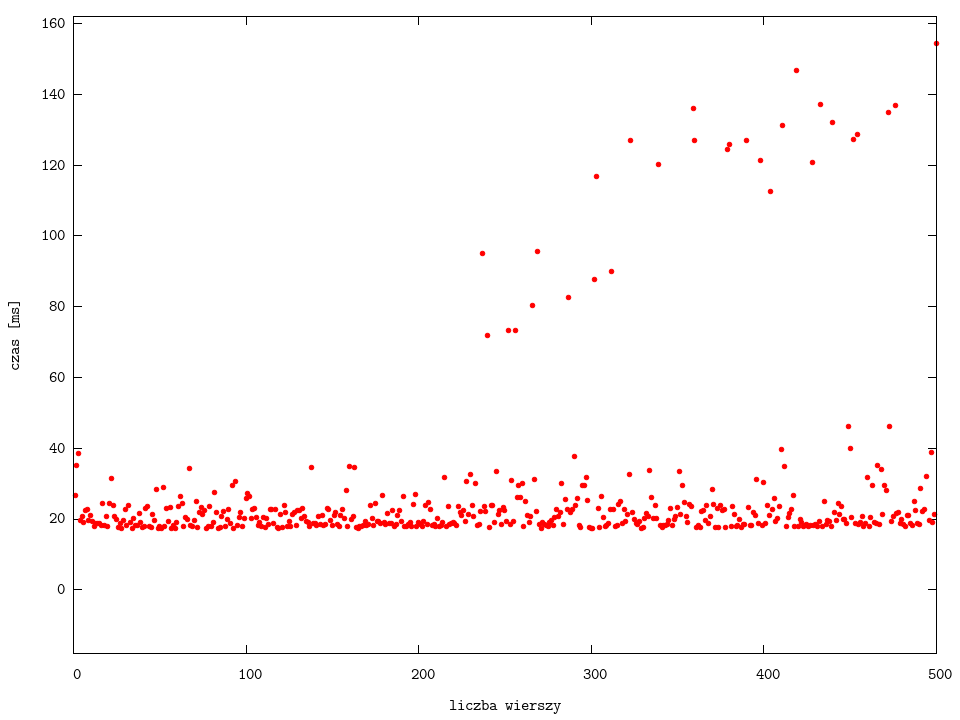
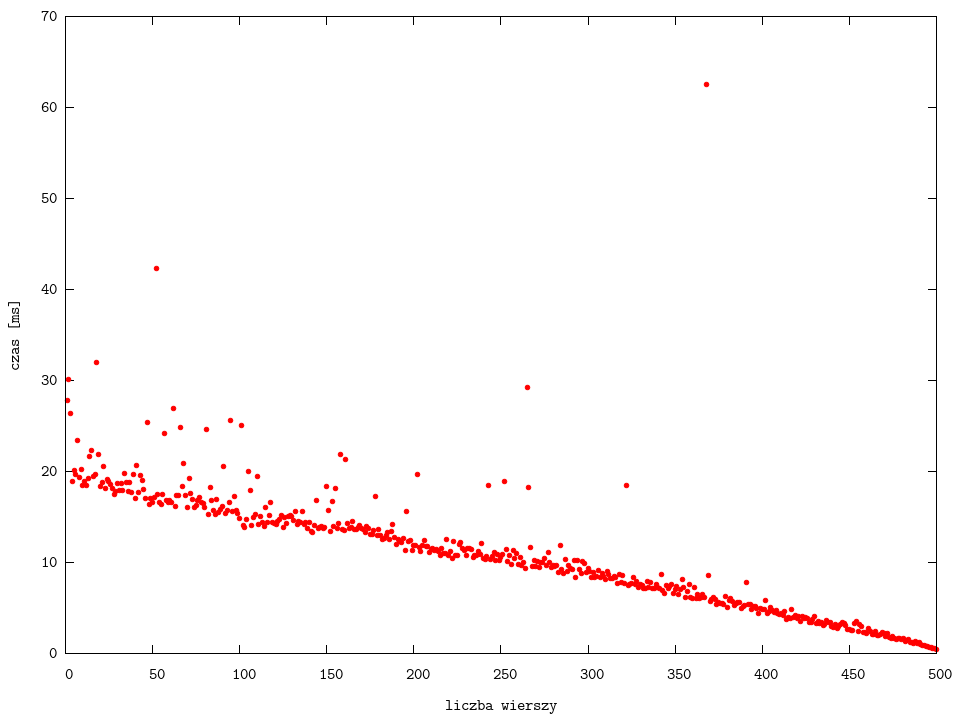
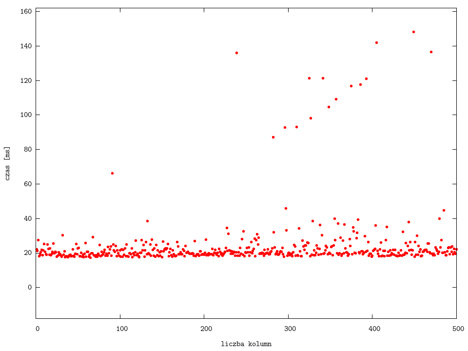

dodawanie gridów-wierszy

dodawanie gridów-wierszy | różna szerokość pierwszej komórki

dodawanie gridów-kolumn

dodawanie gridów-kolumn | różna szerokość pierwszej komórki
powrót do strony głównej